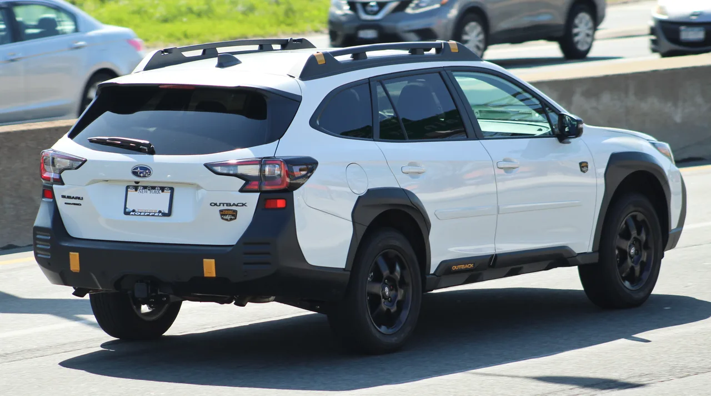
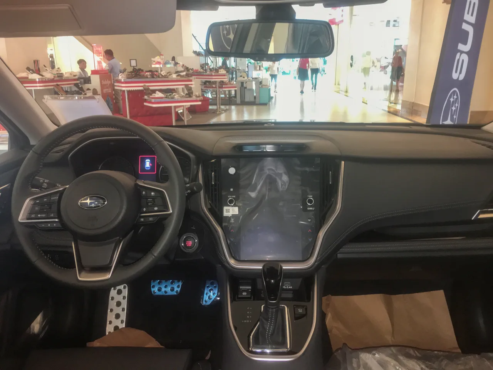
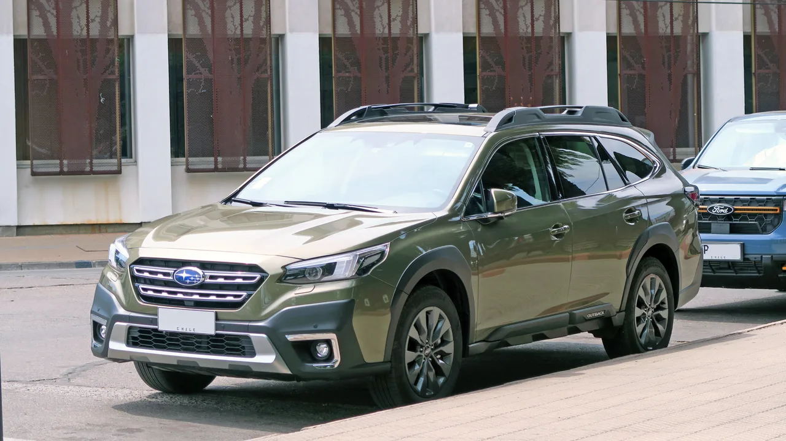

▲ 스바루 아웃백 리미티드(참고 이미지, 현행 세대). 자연흡기 2.5리터 엔진을 얹은 리미티드 트림이 실주행 비교에서 오히려 더 좋은 평가를 받았다
자동차 매체 카스쿱스가 2026년형 스바루 아웃백의 리미티드와 윌더니스 트림을 각각 1주일씩 몰아본 뒤 비교 리뷰를 내놨습니다. 상식적으로는 260마력 터보 엔진을 얹은 윌더니스가 더 매력적인 선택처럼 보이지만, 결론은 정반대였습니다. 리뷰어는 "깔끔한 디자인과 우수한 연비 때문에 여전히 윌더니스보다 리미티드를 선택하겠다"고 밝혔습니다.
1. 스펙만 보면 윌더니스가 압승이지만
숫자만 놓고 보면 윌더니스의 우위는 명확합니다. 2.4리터 터보차저 박서 엔진으로 260마력, 277lb-ft의 토크를 내며, 리미티드의 자연흡기 2.5리터(180마력, 178lb-ft)를 크게 앞섭니다. 견인력도 3,500lbs로 리미티드(2,700lbs)보다 800lbs 더 높습니다. 여기에 리프트업된 서스펜션과 전자제어 댐퍼, 오프로드용 올터레인 타이어, 추가 주행모드까지 갖춰 험로 주파 능력에서는 비교가 되지 않습니다.

▲ 아웃백 윌더니스(참고 이미지). 펜더에 붙은 '윌더니스' 배지와 리프트업된 차체, 블랙 클래딩이 오프로드 지향 트림임을 알려준다
2. 그런데 실연비에서 승부가 갈렸다
문제는 연비였습니다. 실주행 테스트 결과 리미티드는 28MPG(EPA 복합 27MPG)를 기록한 반면, 윌더니스는 18.1MPG(EPA 복합 21MPG)에 그쳤습니다. 거의 10MPG에 가까운 격차입니다. 리뷰어는 "리미티드의 자연흡기 엔진은 도심 주행에서 즉각적인 반응을 보였다"고 평가한 반면, 윌더니스의 터보 엔진에 대해서는 "추월이나 고속도로 합류가 훨씬 수월해지지만, 그만큼 연비가 크게 희생된다"고 지적했습니다. 가격 역시 리미티드가 4만3,000달러인 데 비해 윌더니스는 5만535달러로, 약 7,500달러 더 비쌉니다.
| 항목 | 리미티드 | 윌더니스 |
|---|---|---|
| 엔진 | 2.5L 자연흡기 | 2.4L 터보 |
| 출력 | 180마력/178lb-ft | 260마력/277lb-ft |
| 가격 | 4만3,000달러 | 5만535달러 |
| 실연비 | 28MPG | 18.1MPG |
| 견인력 | 2,700lbs | 3,500lbs |
| 공차중량 | 3,799lbs | 3,973lbs |

▲ 아웃백 실내(참고 이미지). 12.3인치 디지털 계기판과 대형 터치스크린이 윌더니스 상위 트림에 기본 제공된다
3. 그래서 누가 사야 하나
리뷰의 결론은 명확했습니다. 매일 고속도로로 출퇴근하고, 모험이라고 해봐야 트레일헤드 주차장에 차를 세우는 정도라면 리미티드가 더 만족스러운 선택이라는 것입니다. 반대로 사냥이나 숲길 주행, 비포장 산장으로의 가족 여행처럼 윌더니스가 설계된 목적에 실제로 부합하는 용도라면 윌더니스가 정답입니다. 결국 스펙표의 숫자가 아니라 실제 사용 패턴이 선택의 기준이 되어야 한다는 뜻입니다. 참고로 신형 아웃백은 왜건 시절의 정체성에서 벗어나 SUV에 가까운 비례로 재설계됐으며, 통근자·반려견 동반 가족·주말 모험가를 겨냥한 실용성 중심의 상품으로 평가받고 있습니다.

▲ 스바루 아웃백 이전 세대 측면(참고 이미지). 왜건에 가까웠던 과거 비례에서 신형은 SUV에 가까운 차체로 재설계됐다
4. 정리 — 스펙보다 쓰임새
260마력 터보와 180마력 자연흡기, 숫자로는 윌더니스의 완승처럼 보이지만 실제 소유 경험에서는 이야기가 달라집니다. 연비, 가격, 그리고 일상 주행에서의 만족도까지 고려하면 오히려 베이스 트림에 가까운 리미티드가 더 합리적인 선택이 될 수 있다는 것이 이번 비교의 핵심입니다. 아웃백 구매를 고려 중이라면, 트림을 정하기 전에 스스로의 실제 주행 패턴부터 냉정하게 따져보는 것이 좋겠습니다.